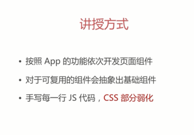

每节课笔记1
1-1
项目技术结构
1-2


2-2
用vue-cli脚手架初始化代码
不是唯一的方式但是是推荐的方式
可以初始化webpack的配置
简化了开发
使用阿里巴巴国内的镜像服务器加速npm install的速度
npm install 卡住了用ctrl+c
2-3
修改一些地方：
1项目结构
2

3

4
2-4
修改的地方


3-2（配置路由）tab导航（要记得设置默认值）
脚手架原来会生成一个路由
在router下面的js文件配置路径和他对应的组件，在Maain。js里面引入 ，然后再app.vue里面通过router-view进行使用
component为什么要大写
本质是一个类
&.router-link-active路由激活的时候修改样式
推荐页面大组件
4-1推荐页面
抓取线上数据介绍（QQ音乐）
4-2 JSONP原理
封装jsonp（promise）
拼接url的函数
function param(data) {
let url = ''
for (var k in data){
let value = data[k] !== undefined ? data[k] : ''
url += `&{k}=${encodeURIComponent(value)}`
}
return url ? url.substring(1) : ''
}
4-3获取推荐的数据（api/recommand）
src/api 对应功能的一些方法（比如推荐）
在对应的组件里面显示推荐的数据
在create生命钩子获取数据
4-4 4-5 轮播图组件
base 基础组建
component 业务组件
4-4 轮播图组件
知识点：
slot会把父组件放在子组件的标签里面的东西放在子组件slot的地方
vue $refs的基本用法 https://www.cnblogs.com/xueweijie/p/6907676.html
用到插槽slot把轮播组件放进去
使用better-scroll实现轮播
写 slider.vue
dom.js dom操作的代码
1增加class的方法
先判断有没有这个类 16:16
2 修改methods _setSliderWidth() {19:51
左右克隆两个dom保证没有缝隙
问题：在recommend里面有值得时候再渲染slider 这样就不会造成mounted的时候 里面是没有需要轮播的内容的
3初始化slider 让他滚动起来
4 添加轮播下面的点(dots) 并且让他自动轮播
初始化dots的函数
使用currentPageIndex使当前页和点关联起来
在初始化slider的时候绑定scrollend事件
this.slider.on('scrollEnd', () => {
let pageIndex = this.slider.getCurrentPage()
if (this.loop) {
pageIndex -= 1
}
this.currentPageIndex = pageIndex
})
获取并且更新当前页
问题:dot不见了
解决：。。没有调用初始化dots数组的函数
4-6 轮播组件（解决窗口大小造成的显示问题）
防止视口大小改变的时候我们的轮播组件出现问题
监听resize事件
如果没有this.slider那么就不需要
如果有就重新计算这个宽度
4-7
避免重新请求轮播数据 缓存


数据接口（歌单）
json.js 获取数据的函数
recommand.vue 根据返回结果渲染数据
getDiscList
可以返回消息 单独打开页面的时候500
（jsonp请求被服务器拒绝）
解决方法：
后端代理（伪造header）
安装axios（dependeces 0.16.1）
dev-server.js
require axios
修改 recommand.js的函数 变成了一个ajax请求而不是jsonp请求
设置返回的foemat为json

实际操作遇到的不同

axios vue提供的ajax
4-9歌单列表组件
把数据赋值给list 数组对象
在template里面添加热门歌单列表
v-html 将特殊字符转义
注：
歌单布局 左右felx
右边的上下也是flex
v-lazy 懒加载指令
v-html 转义指令
4-10 滚动歌单区域
抽象出scroll组件
不是很懂watch是怎么用的
在recommand组件里面引用scroll组件
防止在数据没有获得的时候就初始化了scroll 组件 ，导致他是空的 所以把 disclist给scroll
然后就会监听导数据的变化 就会refresh scroll组件
注：如何知道scroll已经初始化完成了
因为没有报错？
4-11解决先获取歌单在获取轮播区域的情况
解决：
step
监听load事件
loadImage()方法 调用refresh方法
注优化
防止多次触发
用一个变量保存是不是有图片下载成功
注
不能利用watch recommend的数据，因为高度的变化和图片的下载时间有关系
4-12懒加载组件
注
vue-layload组件
在main.js注册这个插件
通过文档查看使用方法
问题：为什么fastclick冲突了加一个class就可以

4-13loading组件
功能：出现一个图片就可以了
loading文件夹
在recommend。vue里面加上
歌手大组件
5-1左右联动的滚动列表
创建一个singerjs和singervue
singerjs
获取歌手列表的函数
根据header里面的内容配置我们的query params
singer.vue
使用js文件获取到的数据
歌手数据结构：
需要按字母顺序分组
5-3 处理成我们需要的数据
_normalizeSinger（）（singer.vue）
抽象出singer，js 用于生成固定的歌手对象数据类
console一下整理好的数据 看看图片地址是否正确
注：
歌手头像没有直接存在于返回的json数据里面，需要通过研究img的地址和json数据中的某个字段是不是有必然的联系
对象的遍历是无序的？？？？
开发类通讯录的组件
5-4
listview.vue
设计传入的数据
用到SCROLL组件
写好ul结构
使用图片懒加载的方式加载所有歌手的额图片
在singer.vue里面使用
父子组件通信 把singer数据传给子组件
5-5快速入口（点击字母就可以到达相应的歌手）
listview.vue
拿到所有开头字母的数组
html结构
list-shortcut
点击事件 touchstart
onShortCut
拿到对象的点击对象的自定义的index属性
listGrounp滚动到对应的地方
给scroll增加定位到相应位置的功能
scroolTo
不用apply不能产生同样的效果吗
保证上下文不会改变
scrolltoelement
给scroll增加ref引用
这里使用不了better-scroll?????
domjs获取相应的对象的属性或者设置属性值
export function getData(el, name, val) {
const prefix = 'data-'
if (val) {
return el.setAttribute(prefix + name, val)
}
return el.getAttribute(prefix + name)
}
滑动事件
stop prevent 防止浏览器的自己原生的滚动 和其他组件的滚动
onshortcutTouchMove
根据滚动的长度检出我们需要滚动左边列表的比例
注：
把touch的数据写在data或者props里面的原因是因为不需要被监听和做数据绑定防止资源的浪费
：是v-bind的缩写？
5-6
左右联动的效果（滚动到相应的位置右边的字母会变成高亮）
scroll.vue
listenscroll
监控滚动的位置
修initscroll传入布尔值 是否需要监控滚动
emit 滚动的位置
listview.vue
created
listenscroll设置为true 并且传递给scroll 子组件
监听滚动事件
@scroll
回调函数scroll
在data中假如需要实时观测的数据scrollY
created需要监控listheight
watch listheigth
calculate listheight
scrollY计算他落在哪个grouplist区间
给需要高亮的快速入口加类
this.probeType = 3???不然不能监听到swap事件？？？
注
完成后click没有改变高亮
5-7
1 在点击的时候高亮没有改变，但是左边的列表位置会改变
_scrollTo(index) {
。。。
加上
this.scrollY = -this.listHeight[index]
。。。
}
2点击快速入口边界的时候触发了点击事件但是没有意义
修改_scrollTo(index) {
3 滚动的时候超出了边界条件的时候出问题
if (-newY >= height1 && -newY <= height2) {
这个条件写错导致没办法在快速入口猾到Z
因为滑到Y的时候就满足条件了
5-9
将A B C在制定区间的时候FIX再我们的界面
解决：
增加一个DOM
计算属性
fixedtitle
返回data里面对应的title
把计算属性的值显示在DOM上面
没有内容的时候对fixtitle进行隐藏
使fixtitle平滑过渡
区块的上限和fixtitle得高度的关系 ，触碰到了fixtitle以后就把它顶上去
方法：
更新diff
watch diff的变化 对视图进行更改
没有》0导致 每次都return ‘’

注：
问题：
title是什么
热门 A-Z
联动的思路
根据左边Y的位置计算到了右边的哪个区间 index
根据右边Y值得变化 然后该改变currentIndex 改变右边的样式
歌手详情页
6-2
配置子组件 index.js
在singer.vue里面用<router-view></router-view>挂载子路由
listview。vue
注册点击事件
selectItem 告诉父元素他被点击了
singer.vue
监听子组件的被点击事件
selectSinger
// 这是什么神奇的功能？？？ 触发路由的跳转
this.$router.push(){
不知道为什么路由跳转不成功 不知道是不是配置的问题
转场动画
在singer-detail.vue里面
注：
快速入口的Z-INDEX有点高
路由不是一个新的页面是一个新的层
问题：
不知道为什么一开始没有跳到singer-detail 并且出现<!-->
后来改了一下singer-detail文件就可以了。。。
因为singer-detail.vue的文件格式不正确
6-3 vuex
不能直接修改数据
组件之间共享数据困难
6-4 vuex初始化
代码文件在store文件夹下面
getters 对state做映射
state

types 防止格式错误？？？
常量

mutations 都是同步操作

getter

index.js
修改state的时候打log插件 createLOgger


vuex提供了一系列修改数据的语法糖

对一个mutation的提交

取出singer对象的数据 直接在实例里面挂载了singer数据


6-5获取歌手详情页面的数据
singer.js 函数
singer.vue使用抓取的数据
注：
问题1： 在当前页面直接刷新就拿不到数据了
因为是通过子路由进来的
解决： 如果是刷新的情况 就进行回退
6-6
对歌曲的信息进行处理
song.js类

singer-detail
维护一个所有歌的信息的数组
对song进行normalize
song.js
工厂方法
根据传入的音乐数据实例化一个song
注
let {musicData} = item是什么形式？？
music-list组件
6-7

singer-detail
调用music-list组件 去除div
music-list组件 传入的3个数据（singer-detail的计算属性）
title bgimage songs
6-9 songlist组件
接收歌曲信息
dom显示 li
music-list.vue
使用scroll包裹songlist
通过mounted动态设置musiclist的高度

注
可以直接把函数的返回值显示
问题：
因为设备的屏幕大小不同 music-list的top值应该是自适应的
问题：SingerID出错导致 请求到的歌曲列表出错
这里的ID写错了

歌曲列表无法滚动的问题
6-10优化music-list的效果
1 和scroll文字一起滚动
scroll组件监听滚动的距离

scroll事件
修改scrollY的值


bglayer的最大滚动距离 （不超过上面图片的高度）

6-11
问题

解决方法
在滚到标题位置的时候改变图片（this.$refs.bgImage）的z-index和高度 然后在滚回去的时候把图片恢复原状

C:\Users\34678\Desktop\ws\vue-music\src\components\music-list\music-list.vue
6-12 musiclist
滚动下去图片放大
注：
在改变图片的scal的时候会导致图片顶部是固定的

高斯模糊（不做 苹果手机适用）
backdrop-filter 渐进增强
6-13抽象浏览器的兼容性处理
donjs ventor
6-14
按钮的返回事件
一个随机播放播放的按钮
要在数据加载完成的时候才能点击
歌曲列表滚动到顶部的时候需要消失

加上loading组件